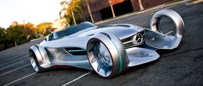
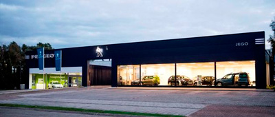

Dynamiek tot in de details.
Prothero biedt par excellence de combinatie van sportief genot en optimaal comfort met de fascinatie van open rijden. Ook op technologisch
vlak speelt Prothero een klasse op zich. Zorgvuldig geselecteerde materialen, vakbekwaamheid en het streven naar perfectie zijn de garantie
om iets heel bijzonders te creëren. Onze 3 huidige designs: Bios, Avatar en Escape, worden met passie ontwikkeld waarbij uw designwensen
met traditioneel handwerk worden verwezenlijkt.
Ontdek modellen.

Jouw Prothero - Individuele klasse.
Prothero op zich is de mooiste ster onder de sterren. Dat kan alleen nog worden verbeterd als ook u het beste van uzelf geeft, namelijk uw goede smaak.
Als aanvulling op de standaard inrichtingsmogelijkheden biedt Unico afhankelijk van de modellenreeks nog meer mogelijkheden tot individualisering aan.
Voor speciale accessoires om uw wagen aan te passen zoals u het zelf wilt, kunt u bij ons natuurlijk ook terecht. Vraag informatie aan uw
Prothero concessiehouder.
Zoek concessiehouder.
Meer dan alleen maar een auto.
Rendabel. Verantwoordelijk. Duurzaam. Bij ons, de uitvinders van de automobiel, is het engagement voor milieu en maatschappij een onderdeel van de
bedrijfsfilosofie dat springlevend is. Wie auto’s bouwt, draagt verantwoordelijkheid. Voor de klanten en voor het milieu. Bij Prothero is
duurzaamheid meer dan een goede bedoeling. Geen woorden maar daden. Iedere dag.
Stel een vraag.